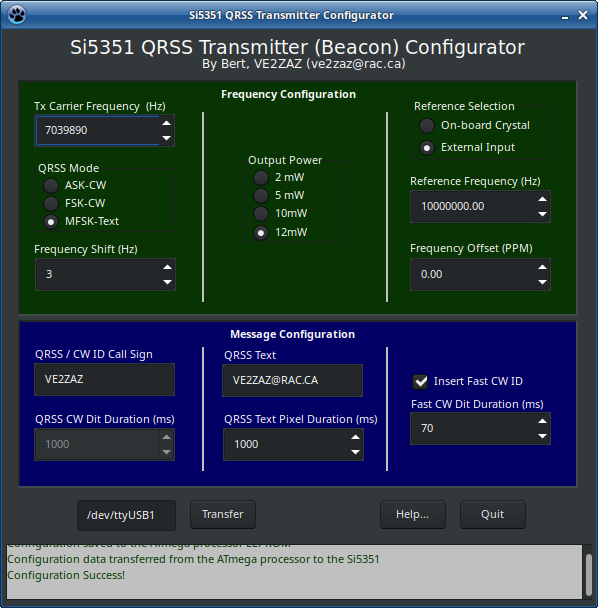
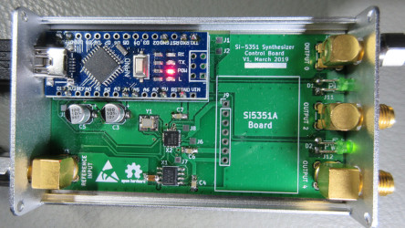
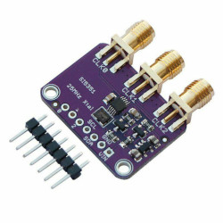
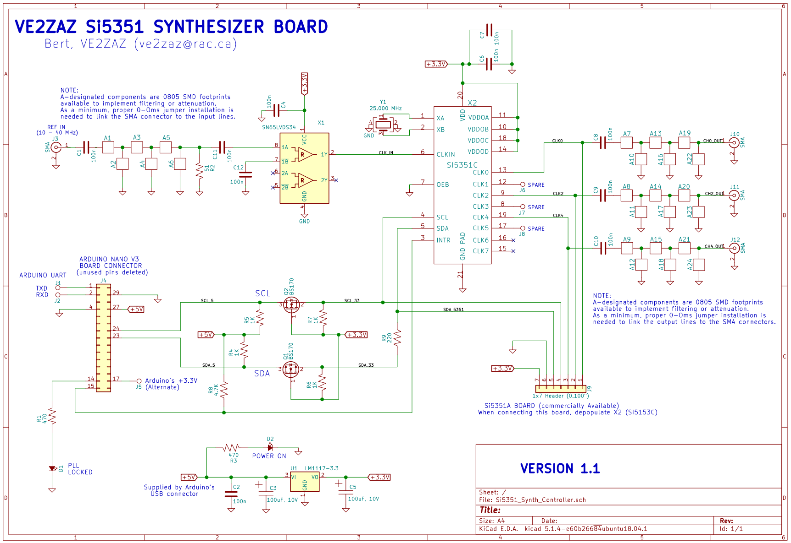
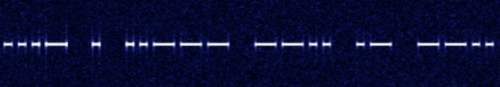
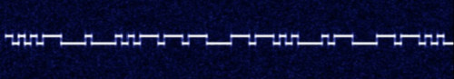
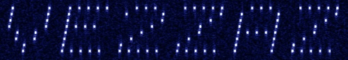

by Bert, VE2ZAZ (ve2zaz at rac.ca )
This software allows to
configure Silicon Laboratories Si5351A/C Synthesizer chips for
QRSS beacon transmission, when supervised by an Arduino Uno or
Nano board. After the Arduino has received a configuration from
the software, it will re-load the Si5351 chip with that same
configuration at every power up or reset. The Arduino (properly
configured by this software) is required, as the Si5351 chip
does not retain its configuration when power is removed; it must
be re-configured at power up.

This software was
written in FreePascal programming language within the Lazarus
IDE. Being a cross-platform compiler, the executable can be made
to run in any Linux, Windows or Mac OS environment when compiled
in that environment. See the "Prerequisites and Installation"
section below for more details specific to the operating system
you are running.
This software was developed on a VE2ZAZ synthesizer board (below, left) hosting an Arduino-nano and an Si5351C Clock Synthesizer chip. The board can alternately be equipped with the Chinese-made Si5351A board (below, right). The main difference between the A and C versions of the Si5351 is that the C version can lock to an external frequency reference between 10 and 40 Mhz (usable down to 5 MHz). All produced output frequencies are then PLL-locked to that reference. The A version relies solely on the accompanying on-board 25 or 27 MHz crystal for its reference. Another advantage of the VE2ZAZ board is that it includes an external reference scaling/shaping circuit, which provides the proper amplitude to the Si5351C, regardless of the shape or amplitude of the input signal.
Note that this software is not designed to
run exclusively on the VE2ZAZ Synthesizer board. As a minimum,
one can build this beacon on a solderless prototype board
using an Arduino Nano, an off-the-shelf Si5351A board, and the I2C line
conversion circuit, also available off-the-shelf.
External +5V and +3.3V supplies are required. See the VE2ZAZ's
Si5351A/C Synthesizer board Circuit Schematic (above).
The software offers three QRSS transmit modes:
ASK-CW,
which is more or less regular CW, but stretched in time.
FSK-CW,
which is an always-on mode using frequency shifting to
differentate between dits/dahs and silences.
MFSK-Text, which uses multiple tone frequencies to encode a text message's pixels.
Among available settings, the Morse code 'dit' duration, the FSK frequency shift and the external reference frequency can be set. An optional fast CW identification can be inserted after each transmission cycle, so that anyone can decode who is sending the tones, without the need of waterfall display capabilities.
|  VE2ZAZ's Si5351A/C Synthesizer board (populated with Arduino Nano and Si5351C)
|
 Chinese-made Si5351A board |
|  VE2ZAZ's Si5351A/C Synthesizer board Circuit Schematic (click on image to enlarge) |
   The available QRSS Transmit modes seen on an horizontal waterfall display, from top to bottom: ASK-CW, FSK-CW and MFSK-Text |
The Si5351's output pulse shape is square. This produces significant spurious odd-harmonics, the 3rd harmonic being only 10dB down from the fundamental. A low pass or band-pass filter is MANDATORY between the Si5351 and the Antenna, otherwise regulations may not be met. For example, assuming a transmit frequency of 7 or 10 MHz, a 7th order LC low-pass filter with a cutoff frequency of 15 MHz should be suitable. This can be hand-made using a few pieces of wire and capacitors...and online filter calculators are readily available.
In order to remain legal, at the very least, the transmitted message should contain the amateur radio call sign, but the text mode could instead display a website or email address containing the call sign.
This software is non-invasive:
No installation
program is required to run this software. Simply
double-click on the "QRSS_Xmitter_Configurator" executable
file to launch the program.
Everything
happens in the local directory and sub-directories where
the executable is located.
No Windows
registry writes are deliberately performed by the
software.No Windows environment variables are modified or
added.
This software uses the LazSerial 3rd-party Lazarus component. In the situation where this software must be re-compiled, the LazSerial component must be installed in Lazarus IDE prior to compiling the software. See the "Recompiling" section below for more detail on the compilation process.
The accompanying Arduino software (sketch) must be used in conjunction with this software, otherwise the latter will not function.
The Arduino sketch uses Jason Mildrum's Etherkit Si5351Arduino library (https://github.com/etherkit/Si5351Arduino). To recompile/install the Arduino sketch, that library must first be installed in the Arduino IDE via the Library Manager (Menu: Sketch -> Include Library -> Manage Libraries...).
The proper Arduino USB-Serial virtual port driver must be installed prior to using this software. This is normally the case with Windows versions prior to Windows 10. Note that this driver is typically installed during the Arduino IDE installation.
This project is supplied with an executable (.exe) that was compiled in Windows 7 32-bits. The supplied executable has been verified to work correctly in Windows 7 32-bits and in Windows 10 64-bits.Thus it is expected to run properly in the Windows 7, 8 and 10 (both 32 and 64-bit) operating systems. Providing a 32-bit executable will be possible for as long as the 32-bit version of Lazarus is available. Note that re-compiling is always possible. General instructions on how to compile the software are provided below.
This project is supplied
with an executable that was compiled in Linux Xubuntu 18.04
LTS 64-bits. The Linux executable may not run in other Linux
distros due to some library dependencies. Re-compiling may
be required. General instructions on how to compile the
software are provided below.
The Arduino USB-Serial virtual port driver is typically included with most Linux distributions. The Arduino Nano virtual port should automatically be detected.
Although it has not
been tested, the software should also run properly on the
Mac OS once compiled in that OS. Similar serial port
considerations also apply.
When needed, the
program can be easily recompiled in the Lazarus IDE environment,
which is available free of charge.
Decompress and save
this project (the entire directory and its content) on your
local drive.
Download and install the Lazarus IDE package (select the version based on the current operating system) from the Lazarus website: https://www.lazarus-ide.org/
In Lazarus IDE,
install the Lazserial component using the Online Package
Manager (Menu: Package -> Online Package Manager). Check
mark "LazSerial" and click on the "Install" button.
In Lazarus IDE, open the "QRSS_Xmitter_Configurator.lpi" project file (Menu: Project -> Open Project...)
In Lazarus IDE, build the project (Menu: Run -> Build or Run).
Launching the
software is done by simply double-clicking on the
"QRSS_Xmitter_Configurator" executable file (in Windows,
"QRSS_Xmitter_Configurator.exe"). In linux, if the program
does not launch, verify that the "executable" file flag is
set.
Hints pop-up when the mouse cursor hovers over an entry field. This provides instantaneous info on the function of each field.
The software saves the various field values and the window position in a text file named "saved_settings.cfg" in the same directory as the executable file. This is performed at program exit. Reloading of the field values is done at program launch by reading the file. The absence of that file in the directory will force the program to revert to default values at program launch.
This software uses Output-0 (the first Si5351 output) as the transmitting port. Other ports are left non-configured.
All frequencies must be entered in Hertz, for example 24.123456 MHz is entered as "24123456". A frequency may be entered with up to 2 decimals, for example 10 MHz can be entered as "10000000.00".
Tx Carrier Frequency: Carrier frequency of the transmitted signal, expressed in Hertz.
In ASK-CW mode, this is the frequency of the CW signal.
In FSK-CW mode, this is the frequency of the dits and dahs tone of the CW signal. The frequency of the alternate tone (when no dits or dahs are being sent) is lower by the Frequency Shift value.
In MFSK Text mode, this frequency corresponds to tone of the lowest row of pixels forming the characters.
QRSS Mode: Selects which type of QRSS signal the system will produce.
ASK-CW: Regular
on-off CW (dits and dahs) carrier.
FSK-CW: Frequency
Shifting CW carrier. Instead of an on-off carrier, a
frequency shift is generated when no dits or dahs are
being sent.
MFSK Text: The
transmitted message is made of a string of characters,
each made of an array of 8 x 5 pixels, readable on an
horizontal waterfall display. The eight "horizontal" rows
of pixels are generated by frequency-shifting the carrier
by the Frequency Shift value. The five "vertical" columns
of pixels are sequentially sent in time, with a spacing
set by the QRSS Text Pixel Duration value.
Frequency Shift (Hz): Frequency change produced to modulate the QRSS signal in the FSK-CW and MFSK-Text modes.
Output_Power:
This allows to select which output drive current (2, 4, 6 or
8 mA) that the Si5351 uses on its RF output. This
corresponds to the proposed approximate output
powers of 2, 5, 10 and 12 milliWatts, as measured by the
author at 10 MHz on a 50-Ohm terminated power meter.
Reference
Selection: Selects the reference signal that
cadences the entire Si5351 clock generation.
On-board Crystal:
This selects the on-board free-running crystal (either 25
or 27 MHz, depending on the crystal connected to the
Si5351) as the reference. This selection can be made for
both the Si5351A and Si5351C synthesizer
chips.
External Input: This selects the external input as the reference, which can accept a frequency range of 10 MHz to 40 MHz. Typically, a 10 MHz reference signal is used. Only usable with an Si5351C synthesizer chip.
Reference
Frequency: This must contain the
reference frequency, whether the 25 or 27 MHz on-board
crystal or the external reference input is used. Entering a
wrong reference frequency will produce a wrong output
frequency. It must be expressed in Hertz, for example
"25000000".
Frequency Offset: Provides the ability to correct for inaccuracies in the reference frequency by entering the offset from nominal in Parts-Per-Million. A positive value will correct a reference frequency that sits too high. A negative value will correct a reference frequency that sits too low. Obviously if the exact reference frequency is known, it can also be entered in the Reference Frequency field; this will have the same effect as entering an offset in PPM. This field accepts a number with up to two decimals.
QRSS / CW ID
Call Sign: This is the call sign that is sent in
the QRSS CW modes. The optional Fast CW Identification also
uses this call sign. Only letters, digits, the '/' slash and
the space characters are accepted. Lowercase characters get
converted to uppercase before transmission.
QRSS CW Dit
Duration: Sets the duration of the "dit" (Morse
code dot) during QRSS CW transmissions. The "dah" (Morse
code dash) will be three times that duration, and spaces
will use the same proportion. Entered in milliseconds. A
suggested value is 5000 milliseconds.
QRSS Text:
This is the text message that is sent in the MFSK-Text mode.
A call sign, email address or web site address can be used.
To remain legal, it is strongly suggested that the string
includes the call sign. Most letters, digits and other ASCII
symbols are accepted. The maximum message length is 30
characters, including spaces. Lowercase characters get
converted to uppercase before transmission.
QRSS Text Pixel
Duration: Sets the duration of each character
"pixel" sent during MFSK-Text transmissions. Entered in
milliseconds. A suggested value is 1000 ms.
Insert Fast CW
ID: This enables the optional Fast (normal
speed) CW Identification. This feature allows others to
identify who is sending the signal, without the need for any
computer to decode QRSS. When checked, the QRSS / CW ID Call
Sign is inserted at the end of each QRSS transmission cycle.
Fast CW Dit
Duration (ms): Sets the duration of the "dit"
(Morse code dot) during Fast CW ID transmissions. Entered in
milliseconds. A typical value range is between 50 and 100
milliseconds.
Serial Port Field: This sets which serial port will be used by the software to communicate with the Arduino.
In Windows, the syntax used in the Serial Port field is "COMx", for example "COM6". The user shall find out which COM port is associated with the USB-serial adapter on the Arduino board by consulting the Windows Device Manager or the Arduino IDE (Menu: Tools -> Port).
In Linux, the syntax used in the Serial Port field is "/dev/ttyUSBx", for example "/dev/ttyUSB0". The user shall find out which serial port is associated with the USB-serial adapter on the Arduino board by consulting the "/dev" device directory, or the Arduino IDE (Menu: Tools -> Port).
Transfer Button:
This initiates a configuration transfer to the Arduino. The
user shall monitor the Status Message Field to receive
progress reports of the configuration transfer.
Help... Button:
Opens this page in the default web browser.
Quit Button:
Terminates this program gracefully. Before the window
closes, the configuration data contained in the various
window fields is saved to the local drive.
Status Message
Field: This read-only box displays progress
messages during the configuration transfer process. It also
displays program errors.
This software is “Free
software” (as defined by the Free Software Foundation), which
means it respects users' freedom and community. The users have
the freedom to run, copy, distribute, study, change and improve
this software. When modifying the software, a mention of the
original author, namely Bert-VE2ZAZ, would be a gracious
consideration.
This text is extracted from the "Help.html" file (and the "Images" directory) provided with this software.
{kind=link}
{kind=link}